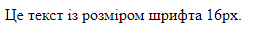

Лабораторна
робота №1 Лабораторна
робота №2 Лабораторна
робота №3 Лабораторна
робота №4 Лабораторна
робота №5 Лабораторна
робота №6 Лабораторна
робота №7 Лабораторна
робота №8 Лабораторна
робота №9
робота №1 Лабораторна
робота №2 Лабораторна
робота №3 Лабораторна
робота №4 Лабораторна
робота №5 Лабораторна
робота №6 Лабораторна
робота №7 Лабораторна
робота №8 Лабораторна
робота №9
Опис предметного середовища
Тема, мета, місце розташування лаби
Селектори
Слеектори тегу
Селектори классу
Слектори ідентифікаторів
Слектори інші
Висновки
Селектори ідентифікаторів в CSS
Селектори ідентифікаторів використовуються для вибору елементів HTML за їх унікальним ID.
Щоб використовувати селектор ідентифікатора, потрібно:
- В HTML-коді додати елементу атрибут `id` з унікальним значенням.
- В CSS-коді перед значенням ID додати символ `#`.
Приклад:
CSS:
#content {
font-size: 16px;
}
Html:
<p id="content">Цей текст із розміром шрифта 16рх.</p>

Цей код CSS зробить зміну розміру шрифту для елементу з ідентифікатором "content"